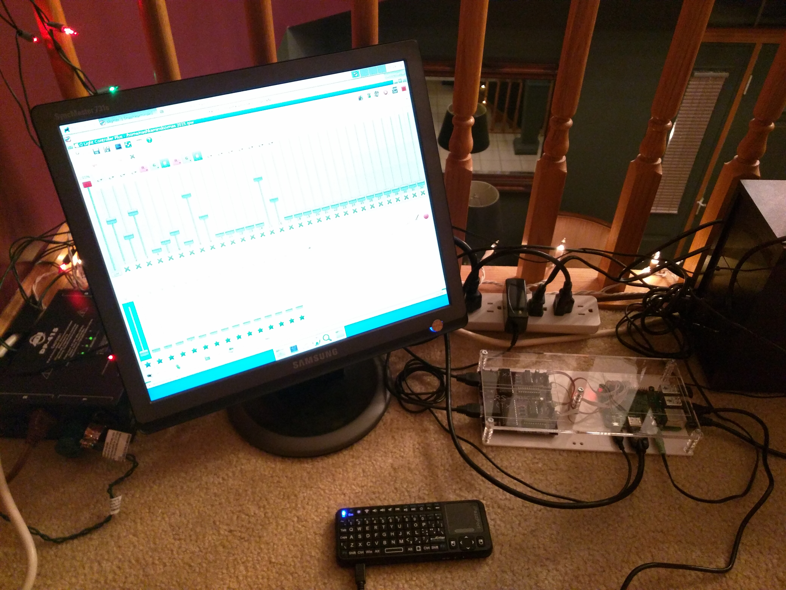
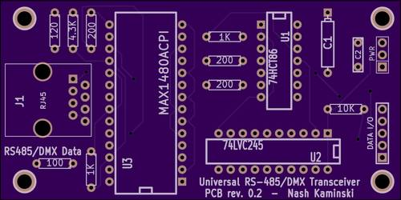

Main Control Console
The main control console consists of a Raspberry Pi 2 with 2 custom engineered RS-485 I/O modules. The Raspberry Pi 2 runs the latest release of Arch Linux ARM that the 2 lighting control programs, Open Lighting Architecture and Q Light Controller +, run on top of. QLC+ is the primary control software, handling all control, sequencing and all other effect synthesis while OLA which is purely a lighting control signal distribution/routing framework handles all necessary conversion and routing necessary to send the outputs from QLC+ to the lighting devices. Additionally, a series of scripts are also run on the Pi for the purpose of configuring the RS-485 I/O modules which convert the TTL serial signals from the Raspberry Pi 2 to RS-485 compliant serial signals. Since DMX operates over an RS-485 physical layer, all that is required to produce a standard DMX signal is a software implementation of the DMX protocol which in this case is provided by OLA's UART native DMX plugin. In order to be able to control the lighting outdoors, the E1.31 OLA plugin is used to encapsulate a copy of the DMX data output by QLC+ into UDP network packets and transmit the data over an Ethernet network to another node consisting of a BeagleBone Black, also running OLA, located outdoors in a weatherproof enclosure. This node then recieves the datagrams and converts them back to standard RS-485 DMX signals using an Anyma uDMX attached via USB which is used to control a dimmer pack connected to the outdoor lights.
Close up of computer module used for main control console.
Universal RS-485/DMX Transceiver
The Universal RS-485/DMX Transceiver is a custom engineered module designed to interface any system capable of transmitting and recieving either 3.3v or 5v TTL serial signals to an RS-485 data bus. This module uses the Maxim MAX1480ACPI driver IC which offers half duplex RS-485 communication at up to 2.5 Mbps along with full electrical isolation between the RS-485 bus and the host computer system, preventing ground loops that can cause signal corruption or even equipment damage. In order to provide compatibility with both 5v and 3.3v systems, both a 3.3v and 5v data output is provided while all inputs are 5v tolerant but with 2v or lower input high thresholds in order to maintain compatibility with 3.3v inputs. Additionally, the 3.3v output is designed as a tri-state output such that this module can be interfaced with many of the newer embedded boards such as the BeagleBone Black that require that thier inputs not be driven until a specific signal is asserted by the system. This module is used extensively in both the main control console as well as the DC dimmer module.
DC Control Module

The DC control module is a custom designed Arduino based controller for controlling devices requiring a maximum of 36V DC at up to 3A per channel. A total of 3 open drain outputs are provided and can be independently reprogrammed as either switch outputs or PWM dimmer outputs. The DC control module is capable of interfacing to a control computer either over USB, TTL serial or DMX(using one of the RS-485 tranceiver boards). Optical isolation is also provided between the MOSFET gates and the logic circuitry such that damage to the rest of the circuit is limited should failure of one of the power MOSFET's occur. In this case, the DC control module is being operated with all 3 channels configured as dimmers and is controlling 3 separate LED light strips, that draw approximately 2A of 12v and 5v current combined and shows no signs of heating or other electrical stress as expected.